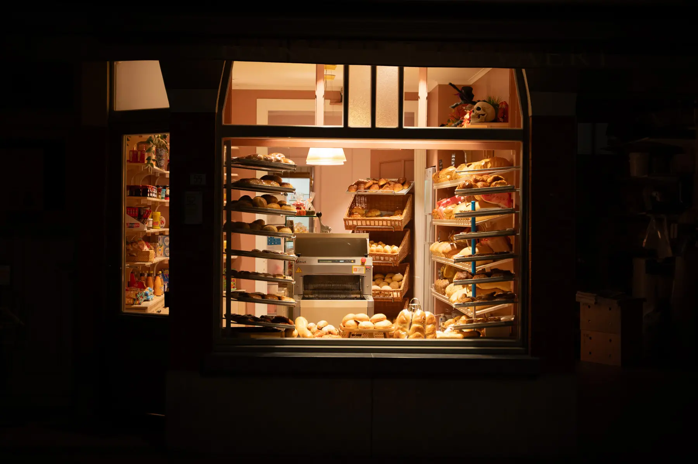
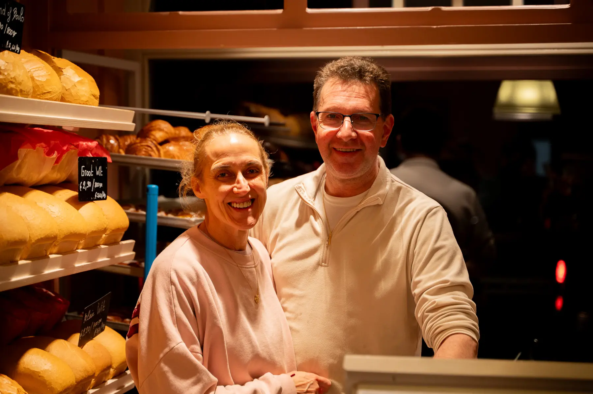

Bakkerij Gevaert, uw warme bakker sinds 1931

Jan & Severine
Over ons
Welkom bij
Jan en Severine
De derde generatie die ambachtelijk bakt in de Polderstraat in Heist-aan-Zee.
Sinds 1931 staat de familie De Grauwe - Gevaert garant voor ambachtelijk brood en lekkers.
Jan Gevaert en zijn vrouw Severine Allegaert namen in 2000 de bakkerij over en staan sindsdien klaar voor de hongerige Heistenaar.
- Opgericht
- 1931
- Generatie
- 3de
- Jan & Severine
- 2000
Vers.
Warm.
Ambachtelijk.
Elke ochtend vers uit de oven: van brood en pistolets tot koffiekoeken. Kom proeven in de winkel.
Iets speciaals nodig?
bel ons even
Geef je bestelling telefonisch door, dan ligt ze klaar wanneer je langskomt.
Bestel hier
Bezoek ons
Openingsuren
| Maandag | 06:30 – 19:00 |
|---|---|
| Dinsdag | 06:30 – 19:00 |
| Woensdag | Gesloten |
| Donderdag | Gesloten |
| Vrijdag | 06:30 – 19:00 |
| Zaterdag | 06:30 – 19:00 |
| Zondag | 06:30 – 19:00 |
Op feestdagen kunnen de openingsuren afwijken.